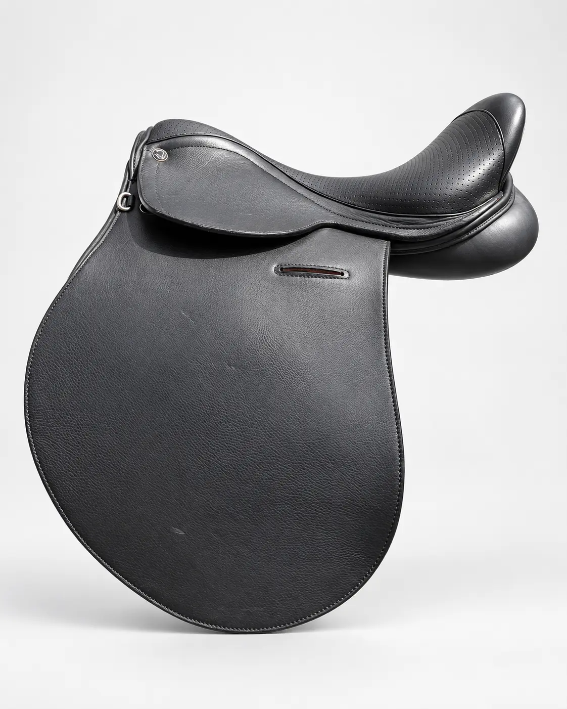
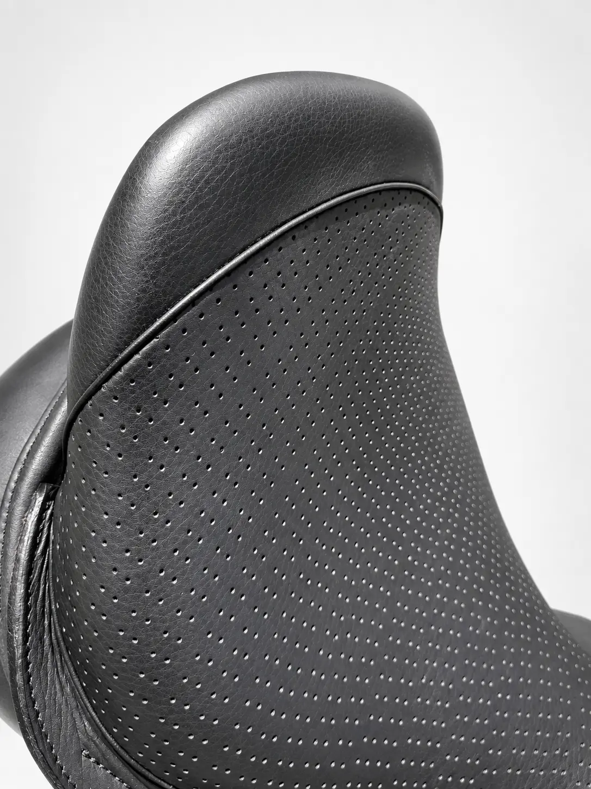
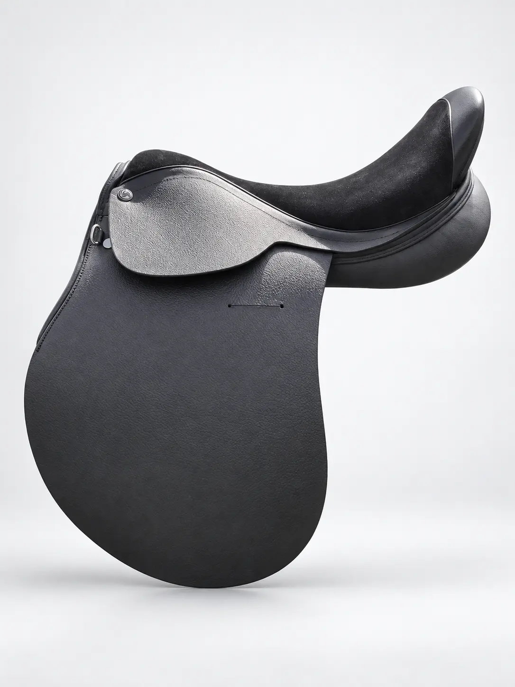
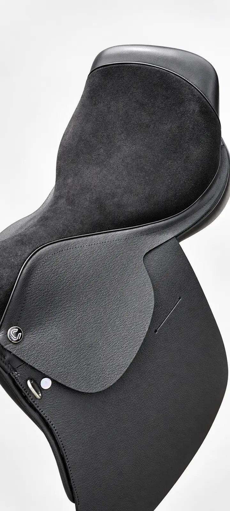
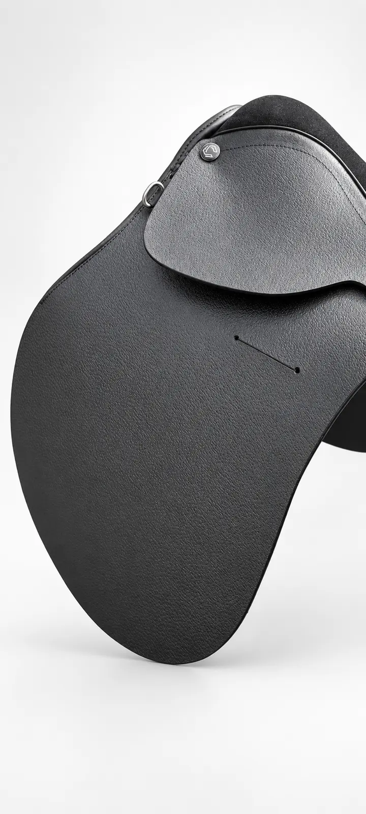
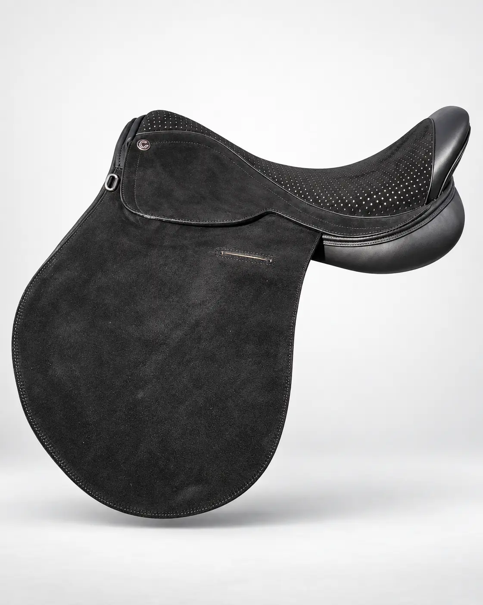
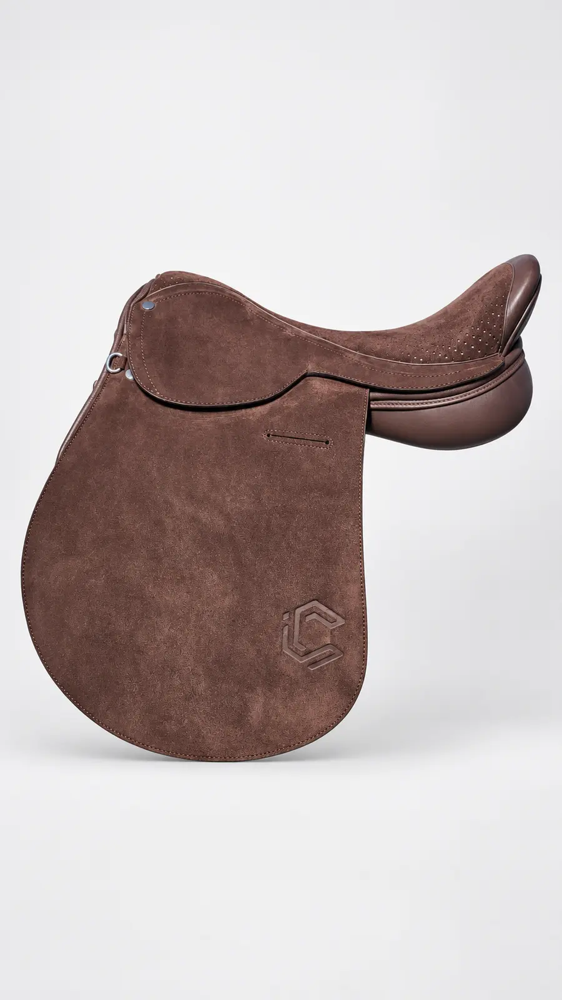
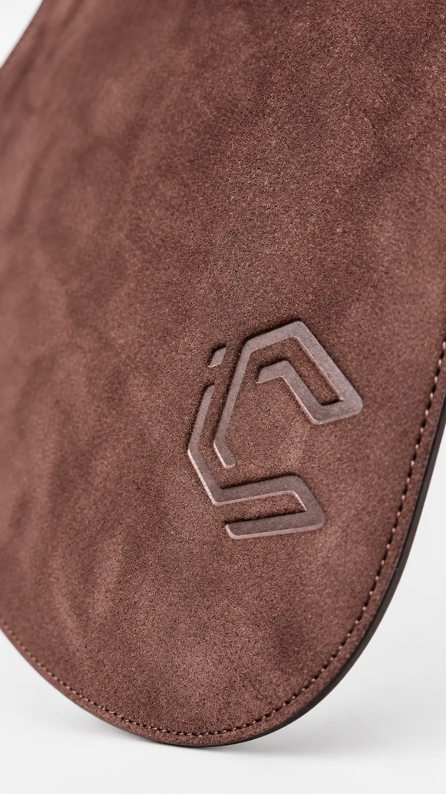
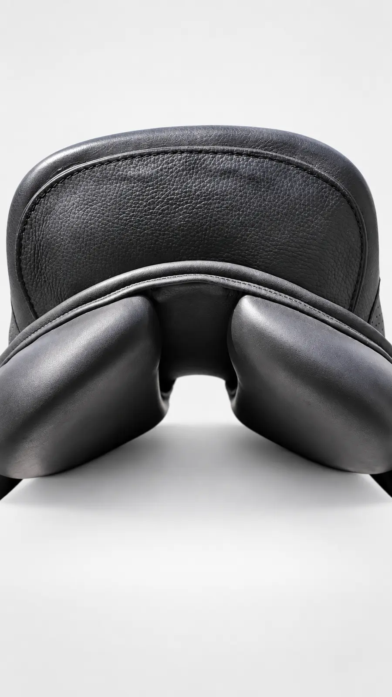

RIDER
INTERFACE.
Monturas configuradas para el contacto, la estabilidad y la respuesta del jugador. Cuatro ejecuciones reales de las líneas Bauti y Americana.


SD–BT / 01
Bauti
Cuero forrado
Asiento perforado
- Modelo
- Bauti
- Exterior
- Cuero forrado
- Asiento
- Perforado
- Colores
- Negro / Marrón



SD–BT / 02
Bauti
Cuero forrado
Asiento de gamuza liso
- Modelo
- Bauti
- Exterior
- Cuero forrado
- Asiento
- Gamuza lisa
- Colores
- Negro / Marrón

SD–AM / 03
Americana
Gamuza
Asiento perforado
- Modelo
- Americana
- Exterior
- Gamuza
- Asiento
- Perforado
- Colores
- Negro / Marrón


SD–BT / 04
Bauti
Gamuza marrón
Asiento perforado
- Modelo
- Bauti
- Exterior
- Gamuza
- Asiento
- Perforado
- Color
- Marrón
CONSTRUCTION DETAILSConstrucción
Construcción
en detalle.
Terminaciones y equilibrio posterior de la línea Iconic Saddles.
